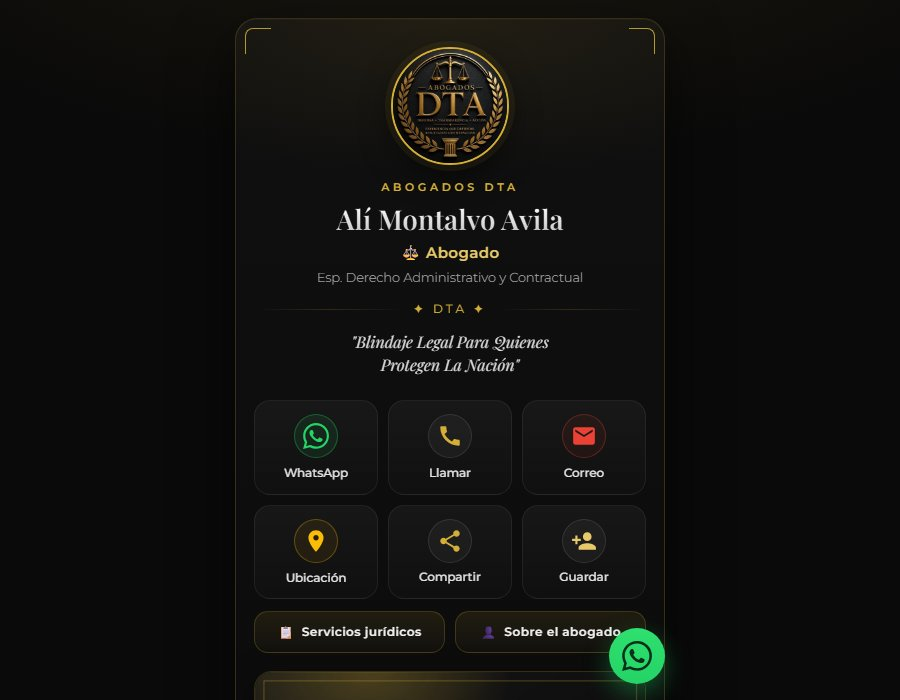

Abogados DTA — Servicios legales
Servicios legales · Landing pages
+150% consultas
+40% casos cerrados
Desafío: la firma no transmitía autoridad en digital. Su presencia se reducía a un perfil con datos básicos, sin explicar las áreas de práctica ni mostrar la experiencia del equipo, y estaba perdiendo consultas frente a competidores con mejor presencia en las mismas búsquedas.
Solución: una landing con las áreas de práctica explicadas una por una, casos representativos, credenciales y trayectoria del equipo, y un formulario de consulta con seguimiento automatizado para que ningún contacto quedara sin respuesta.
Resultado: 150% más consultas en el primer trimestre y 40% más cierre de casos, porque los clientes llegan informados y con expectativas claras sobre el proceso y los honorarios.
"Ahora los clientes llegan sabiendo qué hacemos y con quién van a hablar. Eso cambió la calidad de las consultas."Ver proyecto en vivo